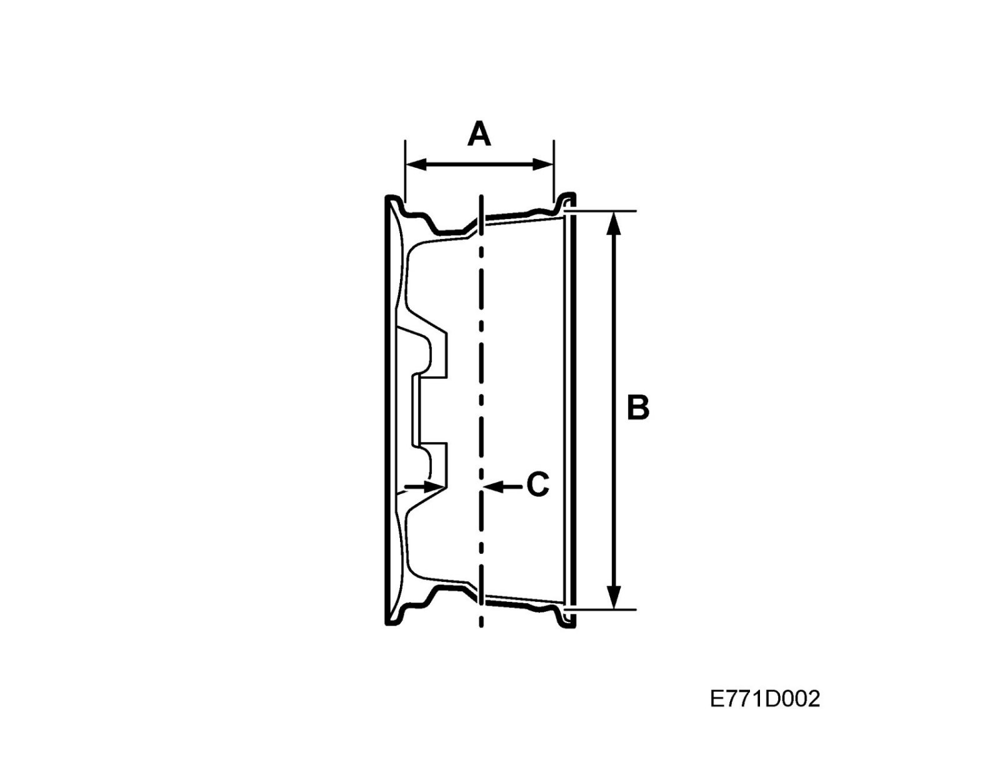
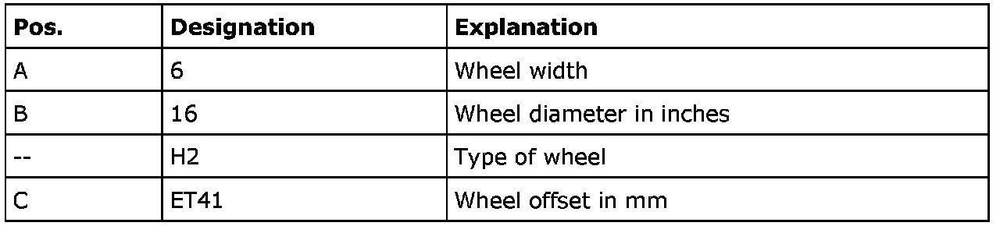

Wheels: Description and Operation
Wheels
The wheel has direct centering to the hub. The wheel bolts are also equipped with tapered guides for the wheel.
Designation
The dimensions of the wheel are described in its designation as per the following table. Example: 6J x 16 H2 ET41.

See also Rims, technical data.
Wheel bolts
Bolt size M12 x 1.5 (5 per wheel). The same bolts are used for both pressed steel and light alloy wheels.